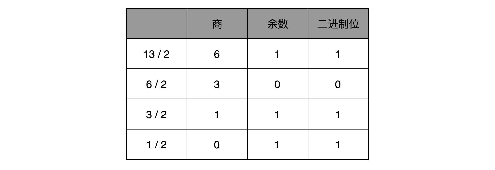
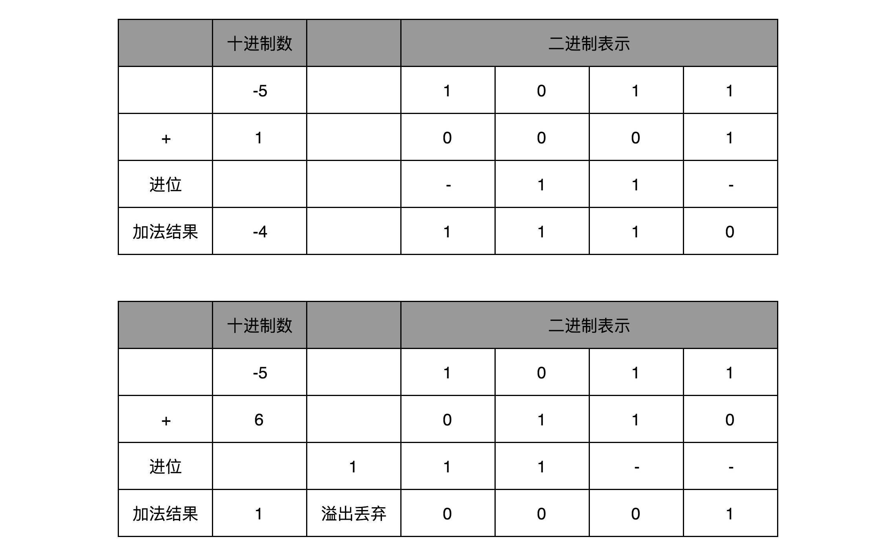
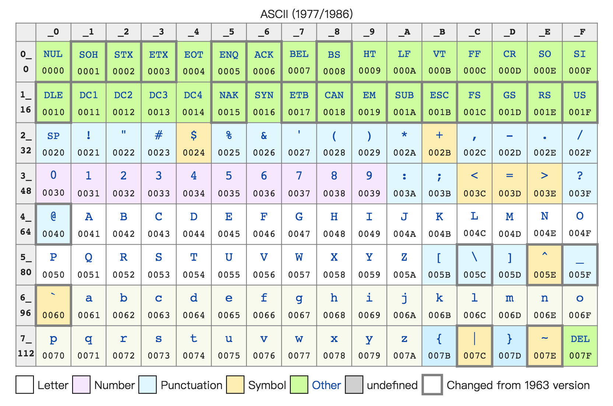
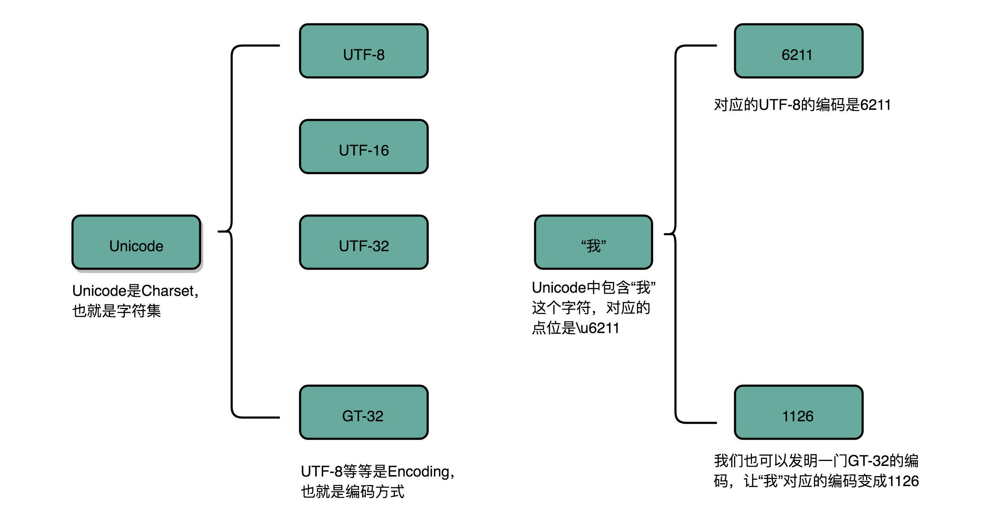
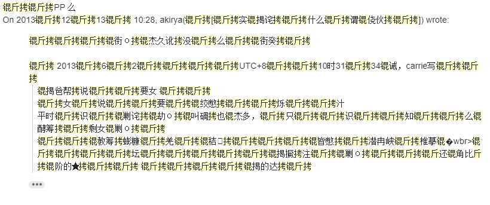

- 00 开篇词 为什么你需要学习计算机组成原理？.md.html
- 01 冯·诺依曼体系结构：计算机组成的金字塔.md.html
- 02 给你一张知识地图，计算机组成原理应该这么学.md.html
- 03 通过你的CPU主频，我们来谈谈“性能”究竟是什么？.md.html
- 04 穿越功耗墙，我们该从哪些方面提升“性能”？.md.html
- 05 计算机指令：让我们试试用纸带编程.md.html
- 06 指令跳转：原来if...else就是goto.md.html
- 07 函数调用：为什么会发生stack overflow？.md.html
- 08 ELF和静态链接：为什么程序无法同时在Linux和Windows下运行？.md.html
- 09 程序装载：“640K内存”真的不够用么？.md.html
- 10 动态链接：程序内部的“共享单车”.md.html
- 11 二进制编码：“手持两把锟斤拷，口中疾呼烫烫烫”？.md.html
- 12 理解电路：从电报机到门电路，我们如何做到“千里传信”？.md.html
- 13 加法器：如何像搭乐高一样搭电路（上）？.md.html
- 14 乘法器：如何像搭乐高一样搭电路（下）？.md.html
- 15 浮点数和定点数（上）：怎么用有限的Bit表示尽可能多的信息？.md.html
- 16 浮点数和定点数（下）：深入理解浮点数到底有什么用？.md.html
- 17 建立数据通路（上）：指令加运算=CPU.md.html
- 18 建立数据通路（中）：指令加运算=CPU.md.html
- 19 建立数据通路（下）：指令加运算=CPU.md.html
- 20 面向流水线的指令设计（上）：一心多用的现代CPU.md.html
- 21 面向流水线的指令设计（下）：奔腾4是怎么失败的？.md.html
- 22 冒险和预测（一）：hazard是“危”也是“机”.md.html
- 23 冒险和预测（二）：流水线里的接力赛.md.html
- 24 冒险和预测（三）：CPU里的“线程池”.md.html
- 25 冒险和预测（四）：今天下雨了，明天还会下雨么？.md.html
- 26 Superscalar和VLIW：如何让CPU的吞吐率超过1？.md.html
- 27 SIMD：如何加速矩阵乘法？.md.html
- 28 异常和中断：程序出错了怎么办？.md.html
- 29 CISC和RISC：为什么手机芯片都是ARM？.md.html
- 30 GPU（上）：为什么玩游戏需要使用GPU？.md.html
- 31 GPU（下）：为什么深度学习需要使用GPU？.md.html
- 32 FPGA、ASIC和TPU（上）：计算机体系结构的黄金时代.md.html
- 33 解读TPU：设计和拆解一块ASIC芯片.md.html
- 34 理解虚拟机：你在云上拿到的计算机是什么样的？.md.html
- 35 存储器层次结构全景：数据存储的大金字塔长什么样？.md.html
- 36 局部性原理：数据库性能跟不上，加个缓存就好了？.md.html
- 37 理解CPU Cache（上）：“4毫秒”究竟值多少钱？.md.html
- 38 高速缓存（下）：你确定你的数据更新了么？.md.html
- 39 MESI协议：如何让多核CPU的高速缓存保持一致？.md.html
- 40 理解内存（上）：虚拟内存和内存保护是什么？.md.html
- 41 理解内存（下）：解析TLB和内存保护.md.html
- 42 总线：计算机内部的高速公路.md.html
- 43 输入输出设备：我们并不是只能用灯泡显示“0”和“1”.md.html
- 44 理解IO_WAIT：IO性能到底是怎么回事儿？.md.html
- 45 机械硬盘：Google早期用过的“黑科技”.md.html
- 46 SSD硬盘（上）：如何完成性能优化的KPI？.md.html
- 47 SSD硬盘（下）：如何完成性能优化的KPI？.md.html
- 48 DMA：为什么Kafka这么快？.md.html
- 49 数据完整性（上）：硬件坏了怎么办？.md.html
- 50 数据完整性（下）：如何还原犯罪现场？.md.html
- 51 分布式计算：如果所有人的大脑都联网会怎样？.md.html
- 52 设计大型DMP系统（上）：MongoDB并不是什么灵丹妙药.md.html
- 53 设计大型DMP系统（下）：SSD拯救了所有的DBA.md.html
- 54 理解Disruptor（上）：带你体会CPU高速缓存的风驰电掣.md.html
- 55 理解Disruptor（下）：不需要换挡和踩刹车的CPU，有多快？.md.html
- 结束语 知也无涯，愿你也享受发现的乐趣.md.html
- 捐赠
11 二进制编码：“手持两把锟斤拷，口中疾呼烫烫烫”？
上算法和数据结构课的时候，老师们都会和你说，程序 = 算法 + 数据结构。如果对应到组成原理或者说硬件层面，算法就是我们前面讲的各种计算机指令，数据结构就对应我们接下来要讲的二进制数据。
众所周知，现代计算机都是用 0 和 1 组成的二进制，来表示所有的信息。前面几讲的程序指令用到的机器码，也是使用二进制表示的；我们存储在内存里面的字符串、整数、浮点数也都是用二进制表示的。万事万物在计算机里都是 0 和 1，所以呢，搞清楚各种数据在二进制层面是怎么表示的，是我们必备的一课。
大部分教科书都会详细地从整数的二进制表示讲起，相信你在各种地方都能看到对应的材料，所以我就不再啰啰嗦嗦地讲这个了，只会快速地浏览一遍整数的二进制表示。
然后呢，我们重点来看一看，大家在实际应用中最常遇到的问题，也就是文本字符串是怎么表示成二进制的，特别是我们会遇到的乱码究竟是怎么回事儿。我们平时在开发的时候，所说的 Unicode 和 UTF-8 之间有什么关系。理解了这些，相信以后遇到任何乱码问题，你都能手到擒来了。
理解二进制的“逢二进一”
二进制和我们平时用的十进制，其实并没有什么本质区别，只是平时我们是“逢十进一”，这里变成了“逢二进一”而已。每一位，相比于十进制下的 0～9 这十个数字，我们只能用 0 和 1 这两个数字。
任何一个十进制的整数，都能通过二进制表示出来。把一个二进制数，对应到十进制，非常简单，就是把从右到左的第 N 位，乘上一个 2 的 N 次方，然后加起来，就变成了一个十进制数。当然，既然二进制是一个面向程序员的“语言”，这个从右到左的位置，自然是从 0 开始的。
比如 0011 这个二进制数，对应的十进制表示，就是 0×23+0×22+1×21+1×200×23+0×22+1×21+1×20 =3=3，代表十进制的 3。
对应地，如果我们想要把一个十进制的数，转化成二进制，使用短除法就可以了。也就是，把十进制数除以 2 的余数，作为最右边的一位。然后用商继续除以 2，把对应的余数紧靠着刚才余数的右侧，这样递归迭代，直到商为 0 就可以了。
比如，我们想把 13 这个十进制数，用短除法转化成二进制，需要经历以下几个步骤：

因此，对应的二进制数，就是 1101。
刚才我们举的例子都是正数，对于负数来说，情况也是一样的吗？我们可以把一个数最左侧的一位，当成是对应的正负号，比如 0 为正数，1 为负数，这样来进行标记。
这样，一个 4 位的二进制数， 0011 就表示为 +3。而 1011 最左侧的第一位是 1，所以它就表示 -3。这个其实就是整数的原码表示法。原码表示法有一个很直观的缺点就是，0 可以用两个不同的编码来表示，1000 代表 0， 0000 也代表 0。习惯万事一一对应的程序员看到这种情况，必然会被“逼死”。
于是，我们就有了另一种表示方法。我们仍然通过最左侧第一位的 0 和 1，来判断这个数的正负。但是，我们不再把这一位当成单独的符号位，在剩下几位计算出的十进制前加上正负号，而是在计算整个二进制值的时候，在左侧最高位前面加个负号。
比如，一个 4 位的二进制补码数值 1011，转换成十进制，就是 −1×23+0×22+1×21+1×20−1×23+0×22+1×21+1×20 =−5=−5。如果最高位是 1，这个数必然是负数；最高位是 0，必然是正数。并且，只有 0000 表示 0，1000 在这样的情况下表示 -8。一个 4 位的二进制数，可以表示从 -8 到 7 这 16 个整数，不会白白浪费一位。
当然更重要的一点是，用补码来表示负数，使得我们的整数相加变得很容易，不需要做任何特殊处理，只是把它当成普通的二进制相加，就能得到正确的结果。
我们简单一点，拿一个 4 位的整数来算一下，比如 -5 + 1 = -4，-5 + 6 = 1。我们各自把它们转换成二进制来看一看。如果它们和无符号的二进制整数的加法用的是同样的计算方式，这也就意味着它们是同样的电路。

字符串的表示，从编码到数字
不仅数值可以用二进制表示，字符乃至更多的信息都能用二进制表示。最典型的例子就是字符串（Character String）。最早计算机只需要使用英文字符，加上数字和一些特殊符号，然后用 8 位的二进制，就能表示我们日常需要的所有字符了，这个就是我们常常说的ASCII 码（American Standard Code for Information Interchange，美国信息交换标准代码）。

ASCII 码就好比一个字典，用 8 位二进制中的 128 个不同的数，映射到 128 个不同的字符里。比如，小写字母 a 在 ASCII 里面，就是第 97 个，也就是二进制的 0110 0001，对应的十六进制表示就是 61。而大写字母 A，就是第 65 个，也就是二进制的 0100 0001，对应的十六进制表示就是 41。
在 ASCII 码里面，数字 9 不再像整数表示法里一样，用 0000 1001 来表示，而是用 0011 1001 来表示。字符串 15 也不是用 0000 1111 这 8 位来表示，而是变成两个字符 1 和 5 连续放在一起，也就是 0011 0001 和 0011 0101，需要用两个 8 位来表示。
我们可以看到，最大的 32 位整数，就是 2147483647。如果用整数表示法，只需要 32 位就能表示了。但是如果用字符串来表示，一共有 10 个字符，每个字符用 8 位的话，需要整整 80 位。比起整数表示法，要多占很多空间。
这也是为什么，很多时候我们在存储数据的时候，要采用二进制序列化这样的方式，而不是简单地把数据通过 CSV 或者 JSON，这样的文本格式存储来进行序列化。不管是整数也好，浮点数也好，采用二进制序列化会比存储文本省下不少空间。
ASCII 码只表示了 128 个字符，一开始倒也堪用，毕竟计算机是在美国发明的。然而随着越来越多的不同国家的人都用上了计算机，想要表示譬如中文这样的文字，128 个字符显然是不太够用的。于是，计算机工程师们开始各显神通，给自己国家的语言创建了对应的字符集（Charset）和字符编码（Character Encoding）。
字符集，表示的可以是字符的一个集合。比如“中文”就是一个字符集，不过这样描述一个字符集并不准确。想要更精确一点，我们可以说，“第一版《新华字典》里面出现的所有汉字”，这是一个字符集。这样，我们才能明确知道，一个字符在不在这个集合里面。比如，我们日常说的 Unicode，其实就是一个字符集，包含了 150 种语言的 14 万个不同的字符。
而字符编码则是对于字符集里的这些字符，怎么一一用二进制表示出来的一个字典。我们上面说的 Unicode，就可以用 UTF-8、UTF-16，乃至 UTF-32 来进行编码，存储成二进制。所以，有了 Unicode，其实我们可以用不止 UTF-8 一种编码形式，我们也可以自己发明一套 GT-32 编码，比如就叫作 Geek Time 32 好了。只要别人知道这套编码规则，就可以正常传输、显示这段代码。

同样的文本，采用不同的编码存储下来。如果另外一个程序，用一种不同的编码方式来进行解码和展示，就会出现乱码。这就好像两个军队用密语通信，如果用错了密码本，那看到的消息就会不知所云。在中文世界里，最典型的就是“手持两把锟斤拷，口中疾呼烫烫烫”的典故。
我曾经听说过这么一个笑话，没有经验的同学，在看到程序输出“烫烫烫”的时候，以为是程序让 CPU 过热发出报警，于是尝试给 CPU 降频来解决问题。
既然今天要彻底搞清楚编码知识，我们就来弄清楚“锟斤拷”和“烫烫烫”的来龙去脉。

搜索了一下我自己的个人邮件历史记录，不出意外, 里面出现了各种“锟斤拷”
首先，“锟斤拷”的来源是这样的。如果我们想要用 Unicode 编码记录一些文本，特别是一些遗留的老字符集内的文本，但是这些字符在 Unicode 中可能并不存在。于是，Unicode 会统一把这些字符记录为 U+FFFD 这个编码。如果用 UTF-8 的格式存储下来，就是\xef\xbf\xbd。如果连续两个这样的字符放在一起，\xef\xbf\xbd\xef\xbf\xbd，这个时候，如果程序把这个字符，用 GB2312 的方式进行 decode，就会变成“锟斤拷”。这就好比我们用 GB2312 这本密码本，去解密别人用 UTF-8 加密的信息，自然没办法读出有用的信息。
而“烫烫烫”，则是因为如果你用了 Visual Studio 的调试器，默认使用 MBCS 字符集。“烫”在里面是由 0xCCCC 来表示的，而 0xCC 又恰好是未初始化的内存的赋值。于是，在读到没有赋值的内存地址或者变量的时候，电脑就开始大叫“烫烫烫”了。
了解了这些原理，相信你未来在遇到中文的编码问题的时候，可以做到“手中有粮，心中不慌”了。
总结延伸
到这里，相信你发现，我们可以用二进制编码的方式，表示任意的信息。只要建立起字符集和字符编码，并且得到大家的认同，我们就可以在计算机里面表示这样的信息了。所以说，如果你有心，要发明一门自己的克林贡语并不是什么难事。
不过，光是明白怎么把数值和字符在逻辑层面用二进制表示是不够的。我们在计算机组成里面，关心的不只是数值和字符的逻辑表示，更要弄明白，在硬件层面，这些数值和我们一直提的晶体管和电路有什么关系。下一讲，我就会为你揭开神秘的面纱。我会从时钟和 D 触发器讲起，最终让你明白，计算机里的加法，是如何通过电路来实现的。
推荐阅读
关于二进制和编码，我推荐你读一读《编码：隐匿在计算机软硬件背后的语言》。从电报机到计算机，这本书讲述了很多计算设备的历史故事，当然，也包含了二进制及其背后对应的电路原理。
© 2019 - 2023 Liangliang Lee. Powered by gin and hexo-theme-book.